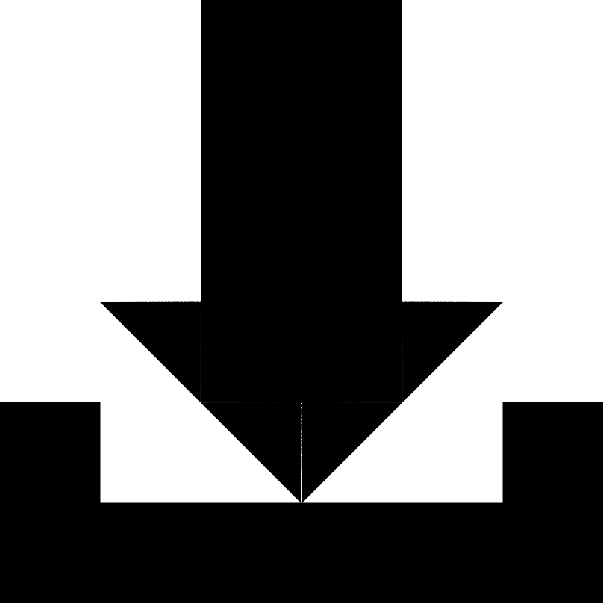
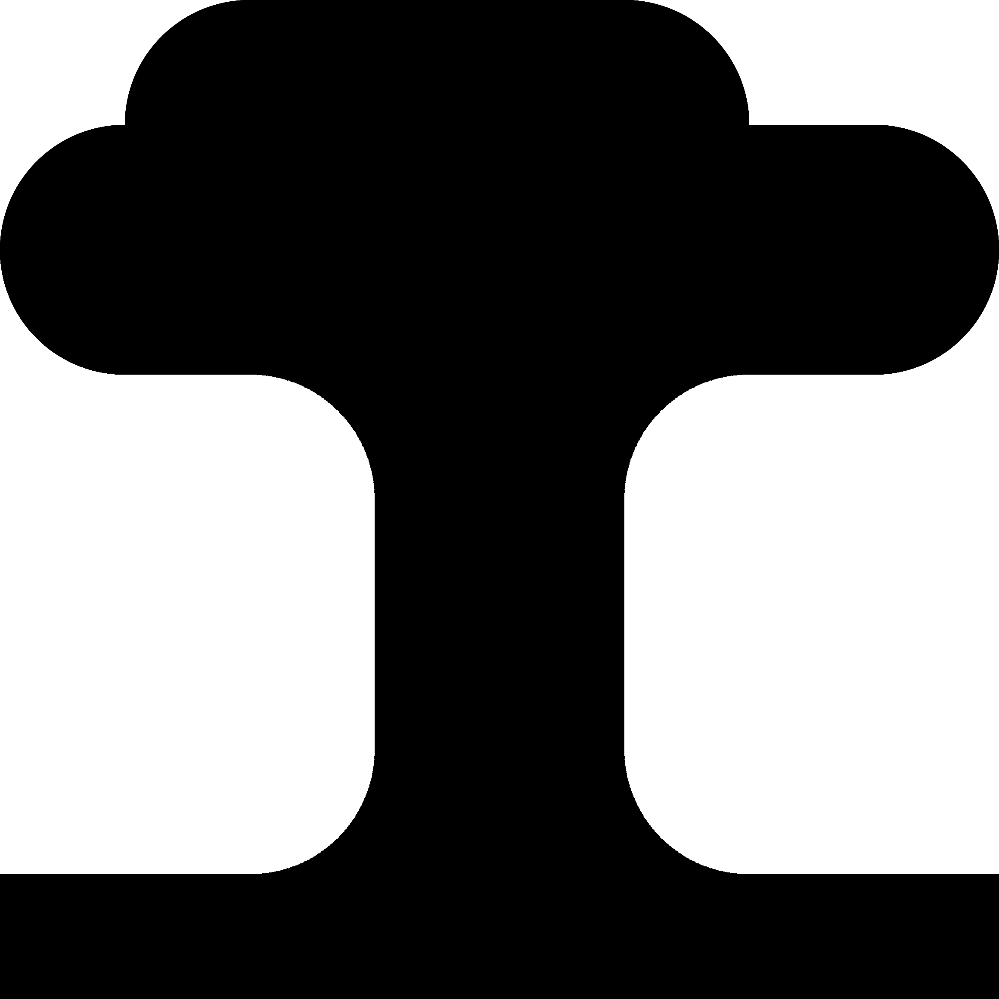
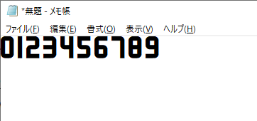
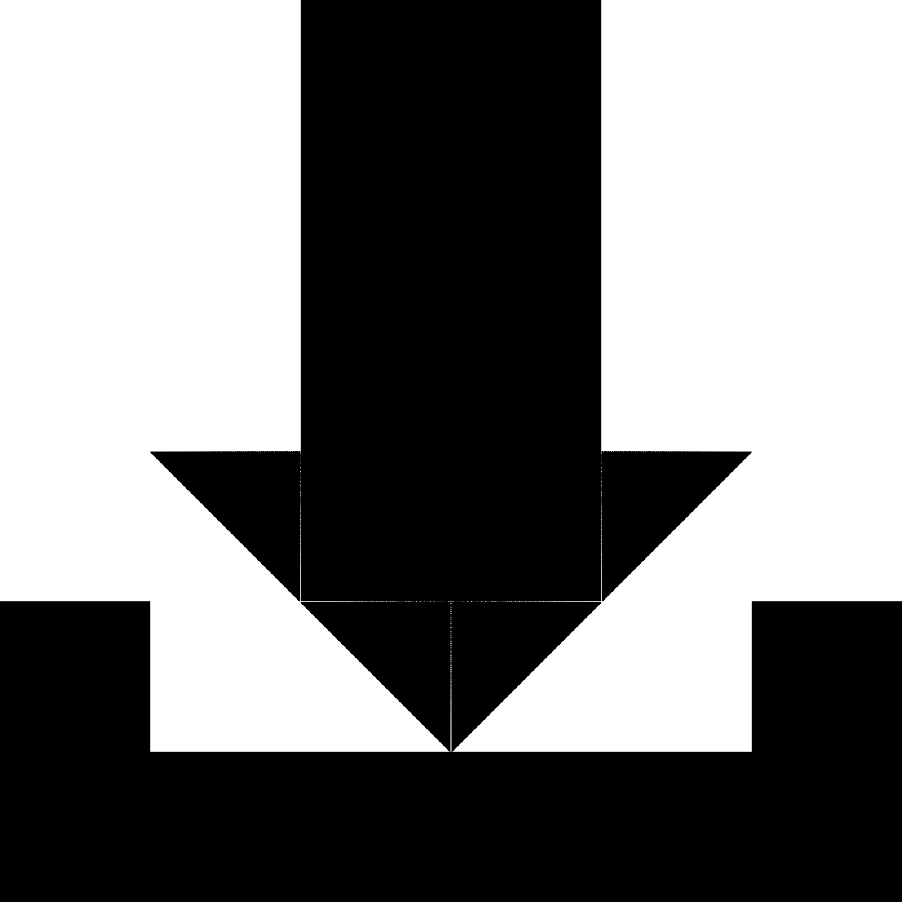
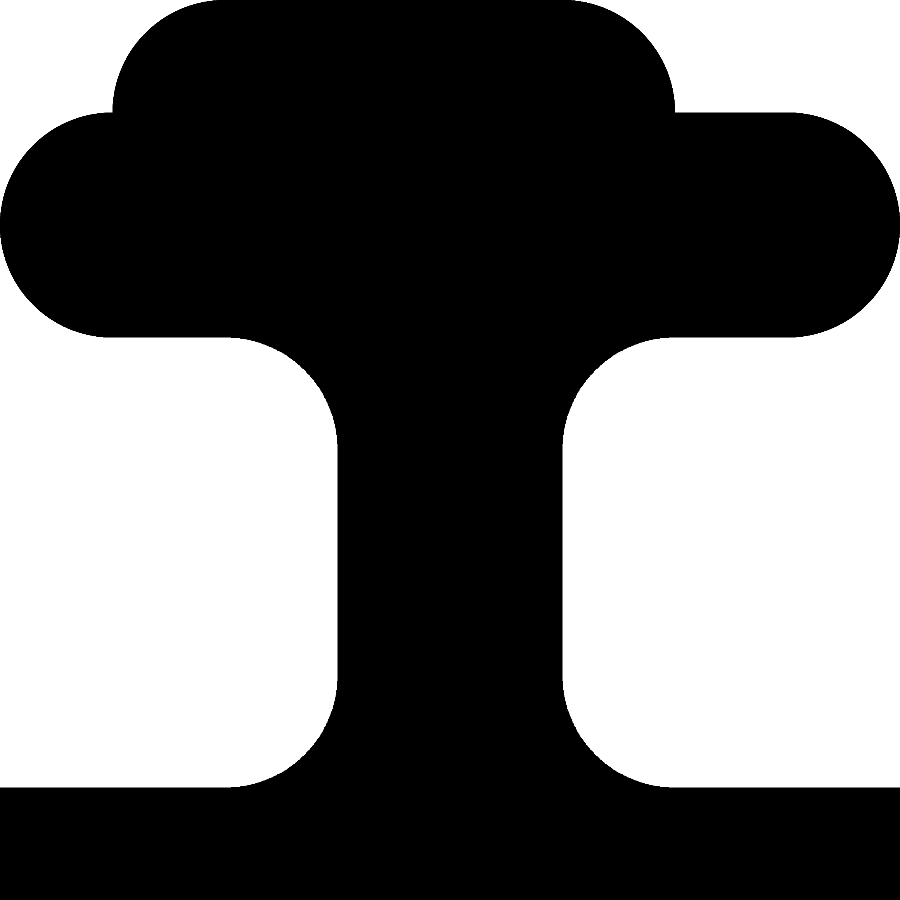
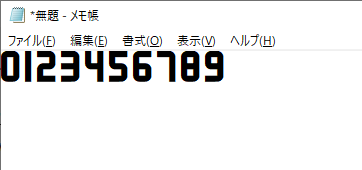

以下に、実際に私がIconBuilderを使って作ったものを並べています。
作れる物のサンプルとして見てみてください。
ソフトウェアのボタン用画像

左から、「開く」、「保存する」、「一手戻す」、「一手進める」です
ソフトウェアやWebサービスのアイコン

左は「地面に生えている木」で、本ソフトでは白抜きにしたものを使用しています
右は「湯気の立ったコーヒーカップ」で、GitHubのアイコンにしています
フォント

本ソフトで作った画像を基に、数字フォントを作りました
以下に、実際に私がIconBuilderを使って作ったものを並べています。
作れる物のサンプルとして見てみてください。

左から、「開く」、「保存する」、「一手戻す」、「一手進める」です

左は「地面に生えている木」で、本ソフトでは白抜きにしたものを使用しています
右は「湯気の立ったコーヒーカップ」で、GitHubのアイコンにしています

本ソフトで作った画像を基に、数字フォントを作りました